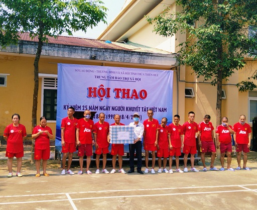

Trung tâm Bảo trợ xã hội tổ chức Hội thao chào mừng kỷ niệm 25 năm Ngày người khuyết tật Việt Nam dành cho người khuyết tật thần kinh tâm thần tại Trung tâm
Sáng ngày 18/4/2023 tại Trung tâm Bảo trợ xã hội đã tổ chức Hội thao chào mừng kỷ niệm 25 năm Ngày người khuyết tật Việt nam (18/4/1998 -18/4/2023) dành cho người khuyết tật thần kinh tâm thần tại Trung tâm. Nhằm trợ giúp xã hội và phục hồi chức năng, rèn luyện một số kỹ năng giao tiếp, kỹ năng sống, các hoạt động văn hóa văn nghệ, thể dục, thể thao, vui chơi giải trí, rèn luyện sức khỏe thể chất, tạo tinh thần lạc quan, phấn khởi cho người khuyết tật thần kinh tâm thần tại Trung tâm.